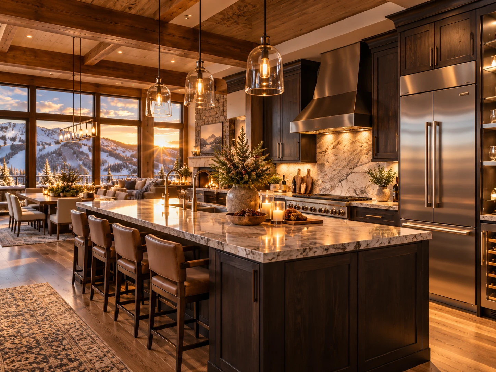
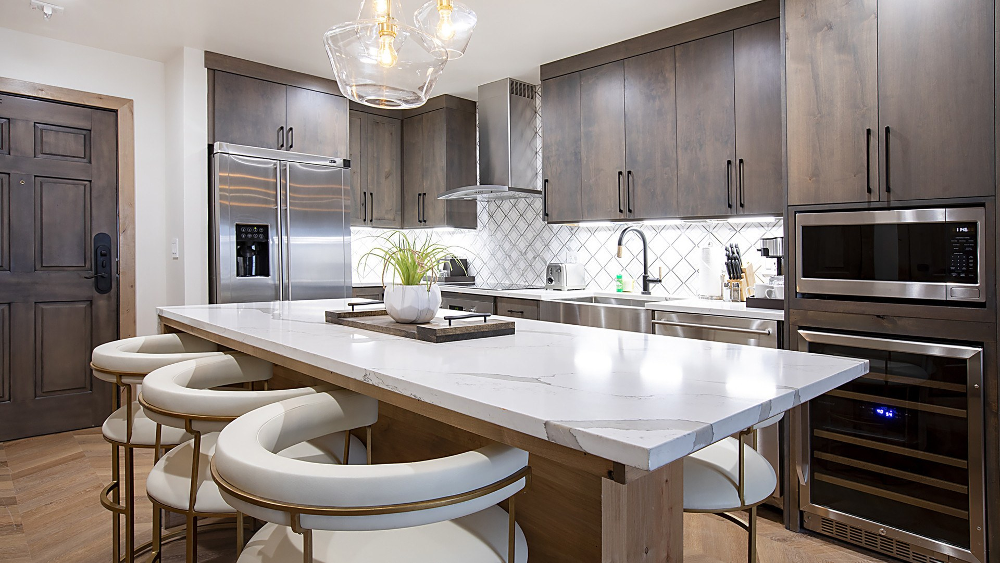

The kitchen is the feature people skim past when booking and use most when they arrive. For a group it changes both the budget and the shape of the evenings.

Three meals a day for eight people across seven days is 168 meals. Whether you cook some of them is the largest controllable variable in a ski trip budget.
Breakfast is the obvious win
Breakfast out, for eight, every morning of a holiday week, is a serious sum and a slow start. Breakfast at your own table is cheaper, faster and better suited to the morning you actually have, which involves finding somebody's missing glove.
It also means people eat when they are ready rather than when a restaurant has a table, which matters when half the group wants first lifts and half does not.
Dinner, on the nights nobody wants to go out
After a full day on snow at altitude, there are evenings when leaving the building is the last thing anybody wants. Without a kitchen those evenings end in room service or a reluctant walk out in the cold.
The ability to cook something simple and eat it together is most of why groups describe a villa trip differently afterwards.
What counts as a real kitchen
Listings use the word loosely, exactly as they do with ski-in ski-out. A kitchenette with a microwave and two hob rings is not the same as a kitchen you can cook for eight in.
- A full oven and range, not two induction rings.
- A dishwasher. For eight people, washing up by hand after every meal removes the point of cooking in.
- A full size fridge. A week of food for eight does not fit in an under-counter unit.
- Enough crockery and pans for the stated occupancy. Worth asking, because it is frequently not the case.
- Somewhere to eat together. A table and an island with stools is the difference between a meal and a buffet.

The part that is not about money
A kitchen gives a group somewhere to be. People drift in and out, somebody cooks, somebody else opens a bottle, children do something else nearby. That is a different holiday from eight people in two hotel rooms, and it is the reason the villa comparison rarely comes down to price.
Do one proper grocery run on the way in from the airport, plan three or four meals rather than all of them, and book a couple of dinners out for the evenings you want them. Cooking every night on holiday is not the goal.
Common questions
Does a kitchen really save money on a ski trip?
For a group, substantially. Breakfast for eight eaten out every day of a week is one of the largest lines in a ski budget, and it disappears almost entirely with a kitchen.
What should I check about a ski rental kitchen?
A full oven and range rather than a kitchenette, a dishwasher, a full size fridge, enough pans and crockery for the stated occupancy, and a table large enough to eat at together.
Is it worth cooking every night on a ski holiday?
No. Most groups do breakfast in, a few dinners in, and book the rest out. The value is in having the option on the evenings when nobody wants to leave the building.
The villa this guide comes from
We own a Premier Two-Bedroom Villa inside Westgate Park City Resort, in Canyons Village. It is 1,100 square feet, two king bedrooms and two queen sleeper sofas, so it sleeps eight in one unit. Full kitchen with a centre island, two bathrooms, in-unit laundry, and a short walk to the Red Pine Gondola.
It is available for Presidents' Week 2027, 13 to 20 February, and we rent it ourselves rather than through an agency.